5.10 检验与分析
「检验」菜单里有一组“分析”工具。它们不改模型，只是给模型“上色”或“画辅助线”，帮你看出肉眼看不出的问题：表面顺不顺、零件能不能从模具里取出来、刀具够不够得着、重心在哪。做 3D 打印的小零件，大部分用不上；做外观件、注塑件、CNC 件时才需要。
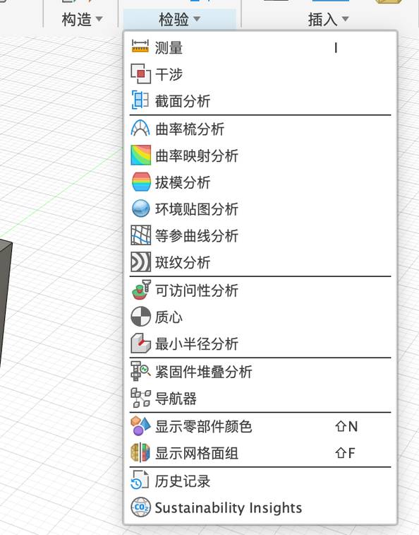
| 分析 | 一句话 | 谁会用到 |
|---|---|---|
| 曲率梳 | 在一条边上画“梳齿”，齿越长说明这里弯得越厉害 | 做曲面外观 |
| 斑纹 | 把黑白条纹“映”在表面上，条纹断了、折了就说明表面不顺 | 做曲面外观 |
| 曲率映射 | 用颜色表示表面各处弯得多厉害 | 做曲面外观 |
| 等参曲线 | 在曲面上画出网格线，看曲面内部的走向 | 做曲面外观 |
| 拔模分析 | 按“能不能顺利从模具里拔出来”给每个面上色 | 注塑件、铸造件 |
| 可访问性 | 从某个方向看，哪些面被挡住了 | CNC 加工、注塑件 |
| 质心 | 标出重心在哪 | 判断会不会倒、平衡 |
所有分析的用法都一样：点菜单里的分析 → 选要分析的实体（或边）→ 有的还要选一个方向 → 点「确定」。结果会一直显示在模型上，并存进浏览器的「分析」文件夹。点那一行前面的小眼睛就能关掉，截图、渲染前记得关。
先搞懂一个词：曲率#
曲率就是“弯的程度”。
- 直线不弯，曲率是 0。
- 圆弧处处弯得一样，曲率是一个固定的数：半径越小，弯得越急，曲率越大（曲率 = 1 ÷ 半径）。
- 样条曲线（自由曲线）每一点弯得都不一样。
两个面（或两条线）接在一起时，按“接得有多顺”分三档：
| 档位 | 意思 | 例子 | 看起来 |
|---|---|---|---|
| G0（位置连续） | 只是接上了，有一个尖角 | 方块的棱边 | 一条明显的折线 |
| G1（相切连续） | 接上了，而且没有尖角，方向一致 | 普通圆角：直面接圆弧面 | 摸着是圆的，但反光在交界处会“跳”一下 |
| G2（曲率连续） | 连“弯的程度”都是慢慢变的，不会突然变 | 手机边框、汽车车身 | 反光是一条顺滑的线 |
G1 和 G2 用肉眼几乎看不出区别，这就是要用曲率梳、斑纹来“看”的原因。
曲率梳（Curvature Comb）#
这是什么：在你选的边上，沿着边每隔一段画一根短线（梳齿）。梳齿越长，那一点弯得越厉害；没有梳齿，就是直的。梳齿顶端连起来的那条线叫包络线。
🧪 实验：看梳齿怎么变#
在 Fusion 里实际看一下：两个方块，前面那条边分别倒了一个普通圆角（G1）和一个曲率连续圆角（G2，圆角对话框里把「连续性」改成「曲率」），从侧面看它们的轮廓：
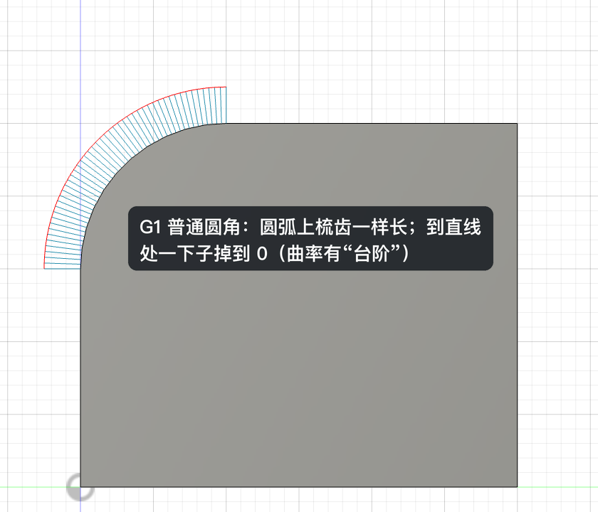
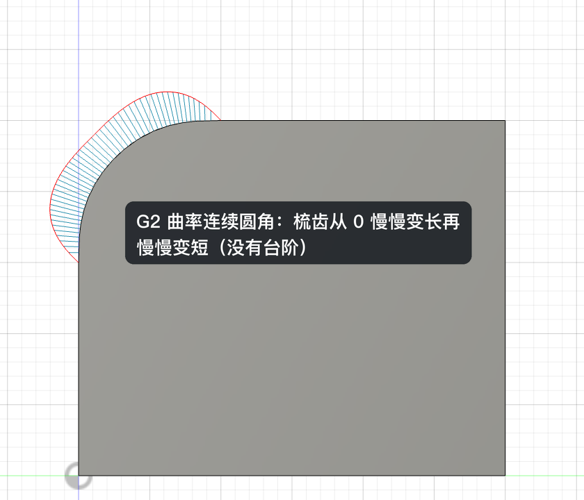
- 「检验 ▾ → 曲率梳分析」。
- 点要看的边（可以按住 ⇧ 选多条）。
- 调「密度」「缩放」直到梳齿看得清，点「确定」。
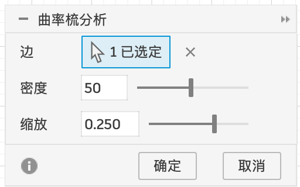
| 选项 | 含义 |
|---|---|
| 边 | 要分析的实体边。草图里的样条曲线也能看曲率：选中曲线后右键，菜单里有「切换曲率显示」（以界面为准） |
| 密度 | 梳齿有多密。太稀会漏掉细节 |
| 缩放 | 梳齿画多长。只是显示比例，不影响结果；梳齿太短看不清就调大 |
怎么看：包络线（梳齿顶端连成的线）越平顺，曲线越好看。包络线上有竖直的跳变 → 那里只有 G1；梳齿翻到另一边 → 曲线在那里换了弯的方向。
斑纹分析（Zebra）#
这是什么：想象把零件放进一个挂满黑白灯管的房间，表面会映出一道道条纹。汽车厂就是这样检查车身漆面的。
怎么看：盯着两个面的交界处看条纹：
- 条纹在交界处断开、错开 → 那里是尖角（G0）。
- 条纹连着，但在交界处突然拐个弯 → 相切（G1）。
- 条纹连着，而且顺滑地弯过去 → 曲率连续（G2）。
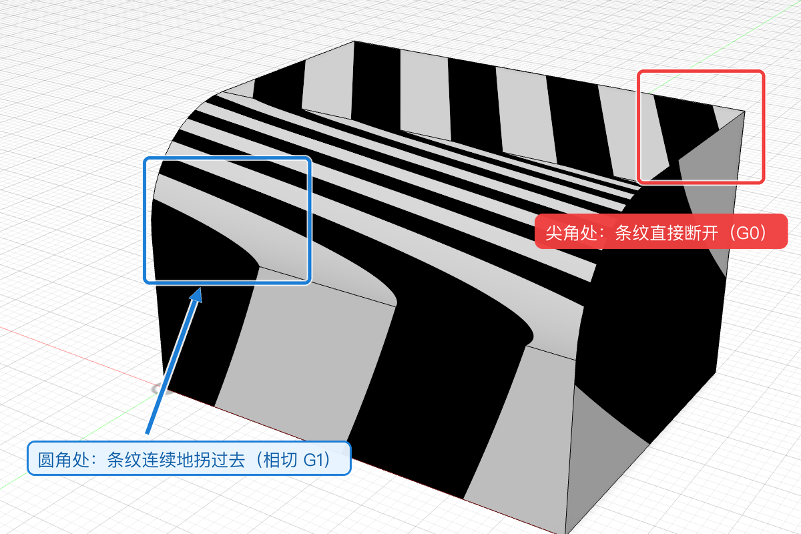
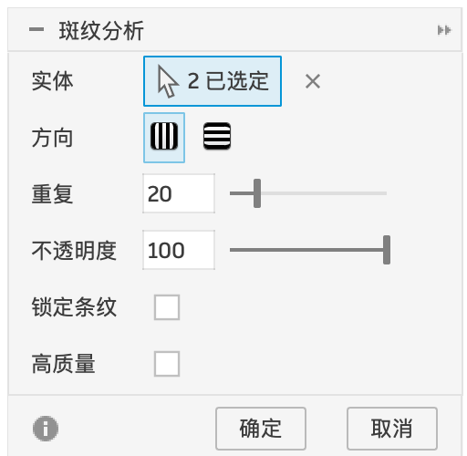
| 选项 | 含义 |
|---|---|
| 实体 | 要显示条纹的实体，可以选多个 |
| 方向 | 条纹竖着排还是横着排。两个方向都看看，有的问题只在一个方向上明显 |
| 重复 | 条纹的数量，越大越密 |
| 不透明度 | 条纹的浓淡 |
| 锁定条纹 | 勾选后转视角时条纹“贴”在零件上不动；不勾时条纹随视角流动（更像真实反光） |
| 高质量 | 显示更精细，曲面复杂时才需要 |
曲率映射（Curvature Map）#
这是什么：直接用颜色告诉你每个地方弯得多厉害。怎么看：颜色平缓过渡 = 表面顺；颜色在某条线上突然变 = 那里不顺（和曲率梳的“跳变”是一回事，只是从“线”换成了“面”）。
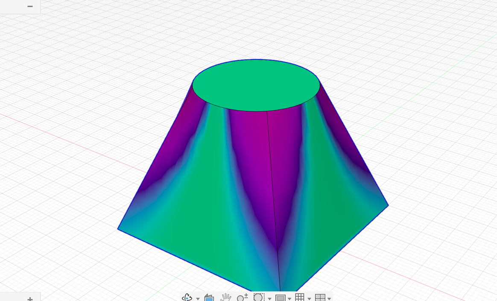
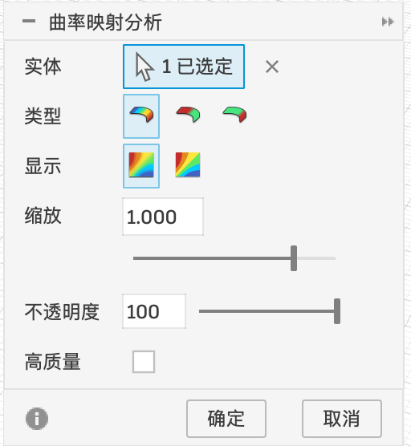
这张图里，平的面（顶面、侧面平的部分）是绿色，弯得多的地方偏紫、偏蓝。
| 选项 | 含义 |
|---|---|
| 实体 | 要上色的实体 |
| 类型 | 三个图标，是三种不同的曲率算法（鼠标停在图标上会显示名字）。新手用默认的第一个就行 |
| 显示 | 两个图标：颜色是连续渐变，还是分成一段一段的色带 |
| 缩放 | 颜色范围对应多大的曲率。整个零件全是一种颜色时，调这里 |
| 不透明度 / 高质量 | 颜色浓淡 / 显示精度 |
等参曲线（Isocurve）#
这是什么：曲面在 Fusion 内部是一张“弹性网”，等参曲线就是把这张网的网格线画出来。怎么看：网格线排列均匀、走向自然，曲面就好；网格挤成一团或者扭在一起的地方，往往是曲面变形太大、容易出问题的地方。
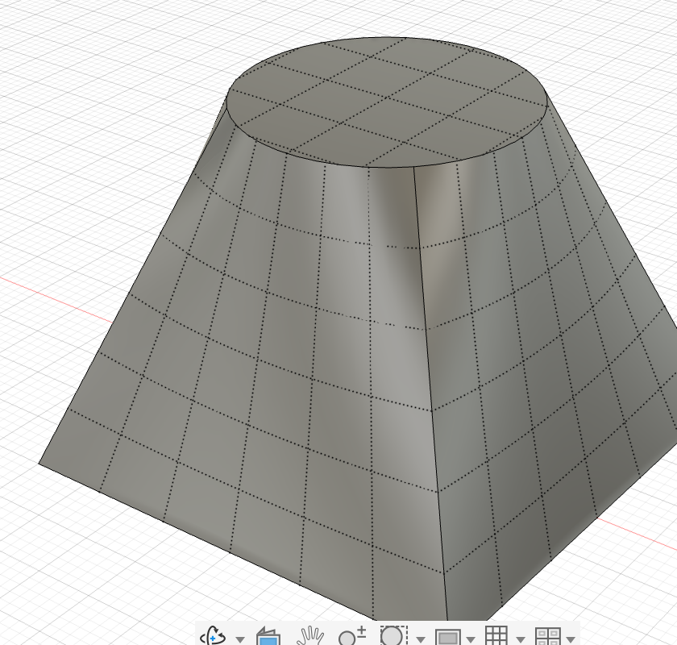
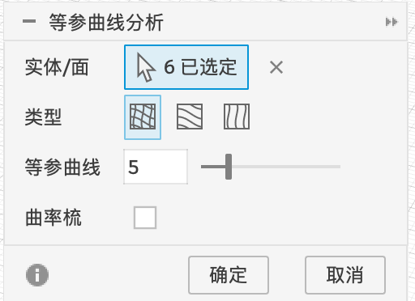
拔模分析（Draft）#
拔模分析做的事：你告诉它开模方向，它按每个面的倾斜角度上色。下面这个演示方块的 4 个侧面，我故意做成了 4 种不同的斜度：
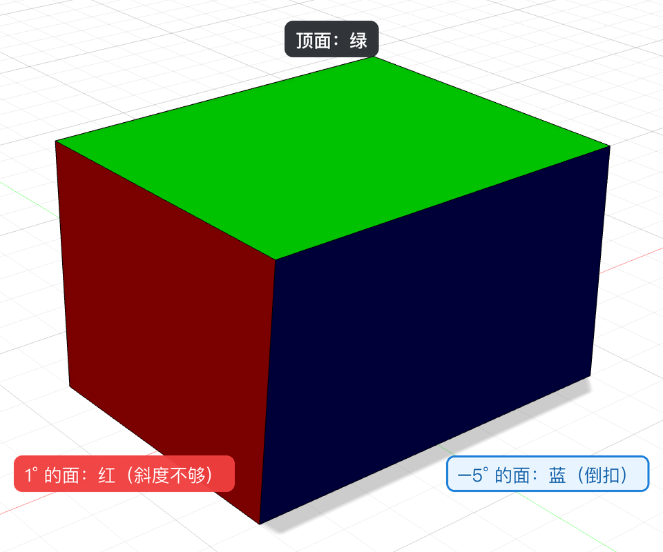
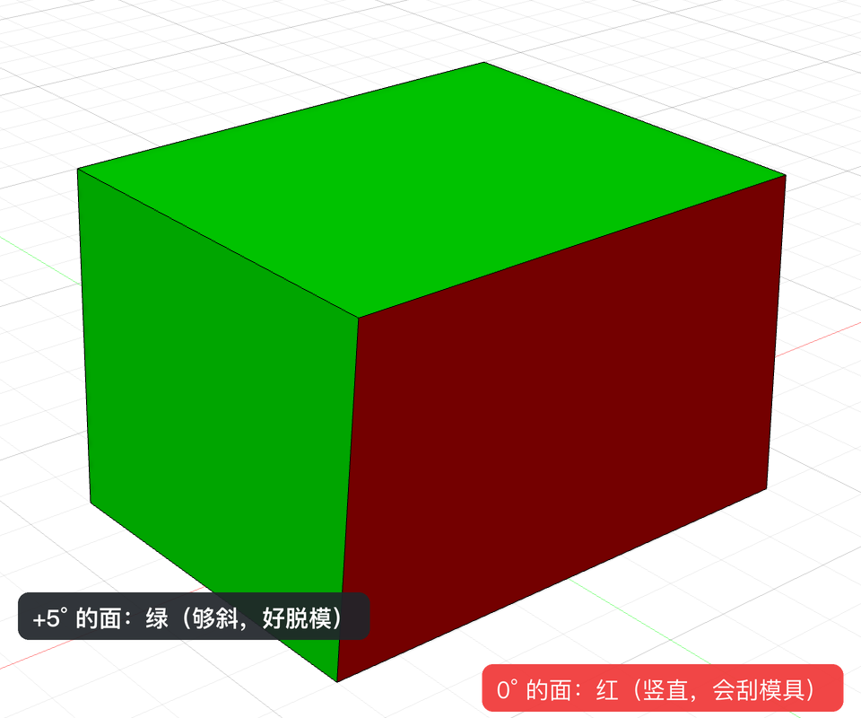
| 颜色 | 意思 | 本例 |
|---|---|---|
| 🟩 绿 | 斜度够了（大于对话框里设的上限，这里是 2°），能顺利拔出来 | +5° 的侧面、顶面 |
| 🟥 红 | 斜度不够（在 −2°～2° 之间），基本是竖直的，会刮模具 | 0° 和 1° 的侧面 |
| 🟦 蓝 | 反向倾斜（小于 −2°），是倒扣，拔不出来 | −5° 的侧面 |
- 「检验 ▾ → 拔模分析」。
- 「实体」选零件；「方向」点一个平面或一条边，表示开模方向（这里选的是 XY 平面，方向就是垂直于它的 Z 轴）。
- 点「确定」。
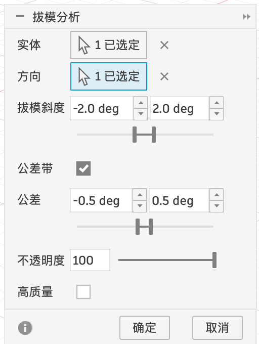
| 选项 | 含义 |
|---|---|
| 实体 | 要分析的零件 |
| 方向 | 开模方向：选一个平面（取它的法线方向）或一条直边 |
| 拔模斜度 | 两个数：低于左边的数算“倒扣”，高于右边的数算“够了”，夹在中间的算“不够”。拖下面的滑块也能改 |
| 公差带 | 勾选后，在“刚好够 / 刚好不够”附近的一小段角度（下面「公差」设的范围）单独标出来，方便找“差一点点”的面 |
| 不透明度 / 高质量 | 颜色浓淡 / 显示精度 |
可访问性分析（Accessibility）#
这是什么：选一个方向，Fusion 假装你的眼睛（或者刀具）从这个方向往零件看，看得到的面标绿色，被别的部分挡住的面标红色。
有什么用：
- CNC 加工：刀具是从上往下伸进去的，被挡住的地方刀具够不着，这个方向就加工不出来，要换方向装夹或改设计。
- 注塑件：被挡住的地方往往就是倒扣，模具要做复杂的滑块。
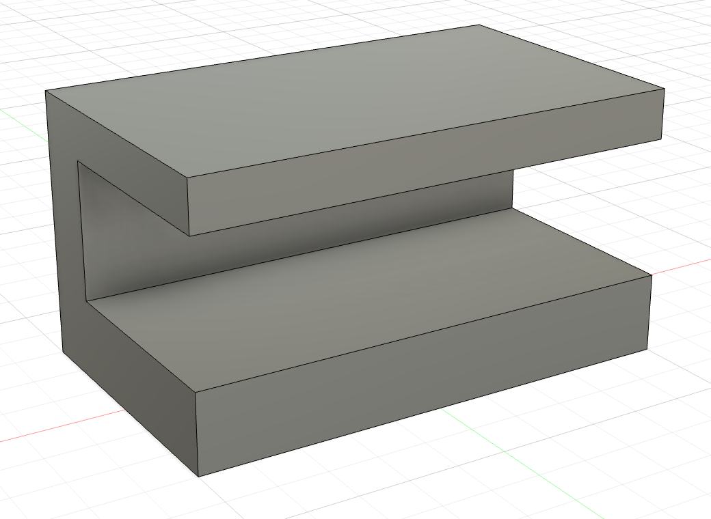
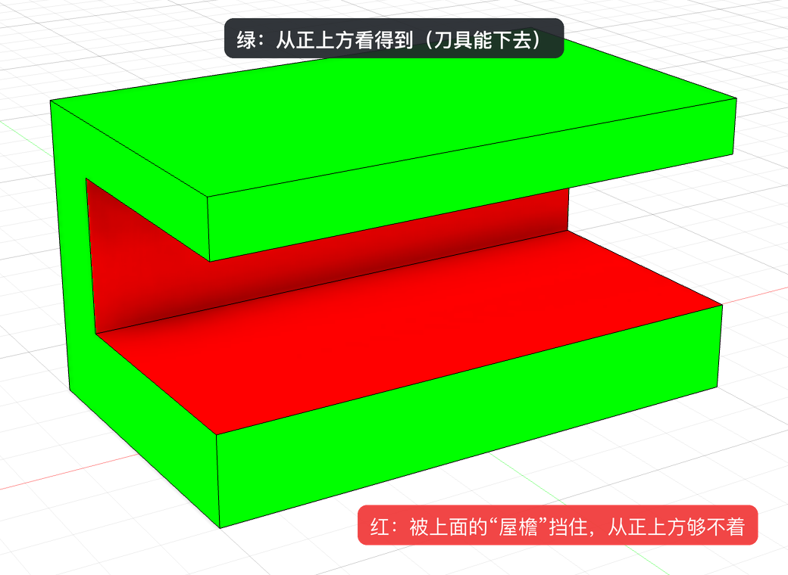
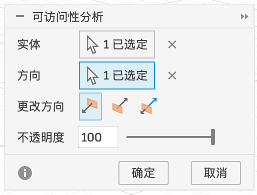
| 选项 | 含义 |
|---|---|
| 实体 | 要分析的零件 |
| 方向 | 从哪个方向看：选一个平面或一条边 |
| 更改方向 | 三个图标：沿正方向看 / 沿反方向看 / 两个方向都看（零件可以翻过来加工时用） |
| 不透明度 | 颜色浓淡 |
质心（Center of Mass）#
这是什么：零件的重心。Fusion 会在模型上放一个小标记。
有什么用：比如手机支架放上手机后会不会往后倒、一个摆件能不能站稳。重心越低、越靠近底面的中间，越稳。
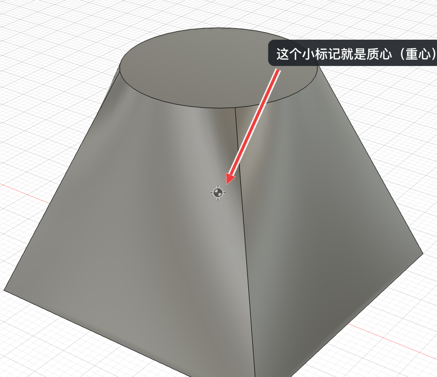
- 「检验 ▾ → 质心」，选实体或零部件，点「确定」。
- 要算准，先给零件设「物理材料」（1.3）。所有零件同一种材料时，重心只和形状有关；不同材料混在一起（比如塑料外壳 + 金属配重），设对材料重心才准。
- 我知道曲率 = 弯的程度，直线是 0、半径越小越大
- 我能用曲率梳分辨普通圆角（G1）和曲率连续圆角（G2）
- 我知道拔模分析里绿 / 红 / 蓝分别是什么意思
- 我知道可访问性分析里红色是“从这个方向够不着”